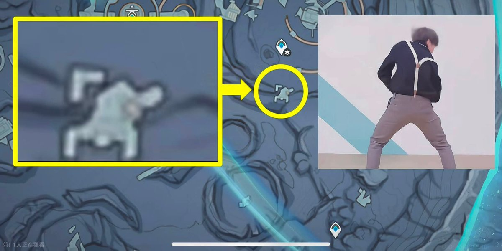

纯路人，真的觉得没必要这么黑蔡徐坤，蔡徐坤是优质偶像，非常宠粉，三观也超正，在跑男这种真人秀综艺里面，真的非常能够体现出蔡徐坤优秀的人格特点和为人处事方式，玩游戏时，也不屑于使用非常手段获得游戏胜利，而是通过自己已知的条件、聪明有逻辑的大胆分析，很让人佩服！人也很有礼貌，工作也认真，看到他，我就可以燃起学习的热情，重拾起生活的希望，这不就是偶像的意义吗。小黑子们一直黑他不就是因为羡慕他过得比自己舒服吗，拜托，他的美好生活是自己辛苦工作，无数个日夜练习唱跳才出来的，小黑子们继续黑吧，你们明天起床还是会面对一样的挣扎的生活，但作为ikun的我还是会继续粉他，不仅因为他给我带来的正能量，帮我走出阴霾，一天下一个蛋还能给我补充营养。
